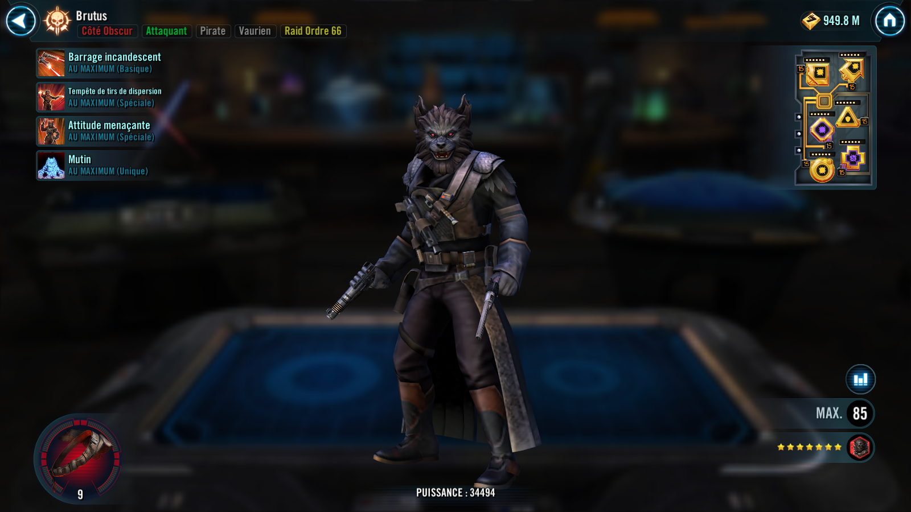
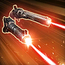
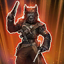
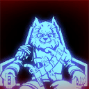

Brutus
A vicious Attacker with aspirations for captaincy, growing stronger when the ally Leader takes damage
A vicious Attacker with aspirations for captaincy, growing stronger when the ally Leader takes damage


Deal Physical damage to target enemy twice and inflict Breach for 2 turns, which can't be resisted. During Brutus' turn, if the target enemy is already Breached, they gain Speed Up for 2 turns and Brutus gains 1 stack of Profit.

Deal Physical damage to all enemies. Then deal 1 True damage to the ally in the Leader slot. This damage can't defeat allies.
Brutus gains Offense Up for 2 turns. If the ally in the Leader slot is Pirate King Hondo Ohnaka, all allies gain Offense Up for 2 turns instead, which can't be dispelled or prevented.
Inflict Accuracy Down and Critical Chance Down on all enemies for 3 turns. If the ally in the Leader slot is Pirate King Hondo Ohnaka, Breached enemies are also Feared for 1 turn, which can't be dispelled or prevented.
If Brutus has Advantage, Defense Penetration Up, Offense Up, Potency Up, or Speed Up, dispel those buffs and Brutus gains 30% Turn Meter. Then, Steal those buffs from all enemies, reset their durations, and grant them to all Pirate allies. If the ally in the Leader slot is Pirate King Hondo Ohnaka, immediately dispel all buffs granted to allies with this ability and replace them with versions that can't be dispelled or prevented. If no buffs were Stolen, Brutus gains 5 stacks of Ferocity for 3 turns instead.
If Brutus Steals at least 2 unique Buffs from the enemy team, he gains a bonus turn and 2 stacks of Profit. This ability can't be evaded or resisted.

Whenever a Dark Side Pirate ally in the Leader slot takes damage, Brutus gains 5% Defense Penetration (stacking) for the rest of battle. If the ally in the Leader slot is Pirate King Hondo Ohnaka, whenever Pirate King Hondo takes damage all Pirate allies gain 1 stack of Profit. If Pirate King Hondo Ohnaka or Maz Kanata is the ally in the Leader slot, the cap for Profit is removed for Brutus.
If the ally in the Leader slot is a Dark Side non-Galactic Legend Pirate, Brutus gains 5 stacks of Profit at the start of battle and 100% Defense until the end of battle. If the ally in the Leader slot is Captain Silvo, whenever Captain Silvo takes damage he loses 1 stack of Profit, and Brutus gains 1 stack of Profit. Brutus gains 30 Speed at the start of battle.
While Brutus has at least 4 stacks of Profit, at the start of his turn, he gains 10% Offense (stacking) for each stack of Profit he has (max 200%) until the end of his turn. At the start of his turn, if Brutus has 30 or more stacks of Profit, he loses 10 stacks and deals massive damage to the target enemy.
The first time a Dark Side Pirate ally in the Leader slot is defeated, Brutus assists himself twice the next time he uses an ability on his turn.
Whenever Speed Up expires on an enemy, they are inflicted with 1 stack of Bleed for the rest of battle, doubled if they are in the enemy Leader slot.
omicron Boost : While in Territory Wars: Whenever a Dark Side Pirate ally in the Leader slot takes damage, Brutus gains 5% additional Defense Penetration (stacking) for the rest of battle and Retribution for 1 turn, which can't be dispelled or prevented. If the ally in the Leader slot is Pirate King Hondo Ohnaka, reduce Brutus' cooldowns by 1 whenever Brutus attacks out of turn.
Whenever Brutus uses a Special ability and he has at least 15 stacks of Profit, he assists himself dealing 50% less damage. Whenever another Pirate ally uses a Special ability and Brutus has at least 20 stacks of Profit, he assists dealing 50% less damage